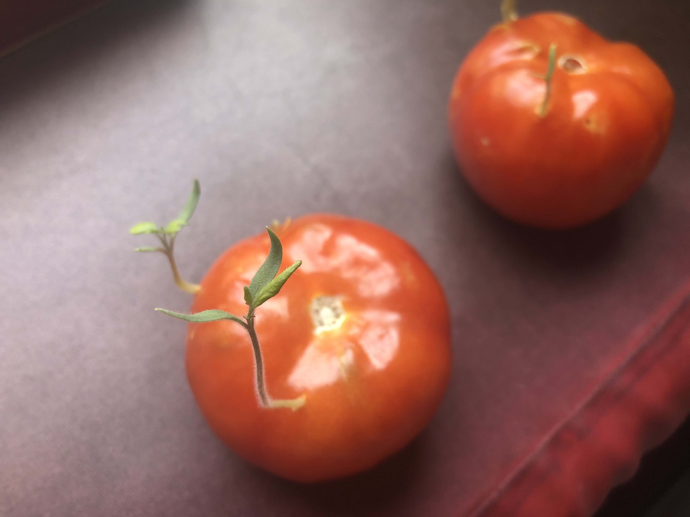

Oranges or Tomatoes, which do you prefer?
Which fruit do you prefer between oranges and tomatoes?
It doesn't really matter because I'm going to be talking about tomatoes today.
Have you heard of viviparous tomatoes before?
It's when a seedling starts growing while it's still inside a full grown tomatoe.
It looks a little gross, but once you get used to it, it's an amazing thing!

The below is not really a recipe nor directions. It's more of what happened.
How to Grow Viviparous Tomatoes During COVID-19
Ingredients & Materials
- 2 to 3 full matured tomatoes (preferably on the vine)
- 1 cool, dark space to store
- 1 bright, warm space to store
- 1 very strong stomach that's not squeamish
- a lot of time preferably lot of time indoors, with nothing to do
- 1-10 cotton mask or face covering, preferably reusable
- 100 ml of hand sanitizer
- 1 functioning credit card
- 1 reliable mode of transportation, car, leg & foot
Instructions
- Wash hands for at least 20 seconds with warm water & soap
- Put on face covering or mask
- Squeeze 20 ml of hand sanitizer into portable bottle
- Put portable bottle in pocket along with credit card
- Use preferable mode of transportation to nearest grocery store
- Purchase 2-3 on-the-vine tomatoes
- Pay with credit card to reduce chances of human contact & contamination
- Use preferable mode of transportation to quarantined headquarters
- Place grocery bag on floor along with contaminated items
- Wash hands again for 20 seconds with warm water & soap
- Remove face covering
- Sanitize all contaminated items, such as phone, keys, credit card
- Pray the store-bought tomatoes do not have COVID-19 on them
- Wash hands again (20 secs minimum!)
- Take tomatoes out of bag & place in dark spot
- Forgot about the tomatoes for about 1 to 2 months
- Find alien looking squiggly sprouts growing out from the tomatoes
- Be grossed out by said squiggly wormy looking sprouts
- Get over it & place the now viviparous tomatoes in the sunny spot
- Rotate placing the viviparous tomatoes between the sunny & dark spaces
- Grow sprouts into full fruit producing tomatoes
- You are now a tomatoe farmer
- You now live off the grid
- Grow beard
- Live off land
- Change your name to Marven
- This is your life now